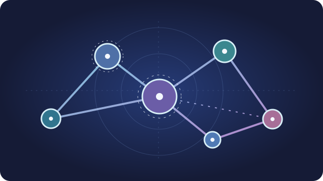
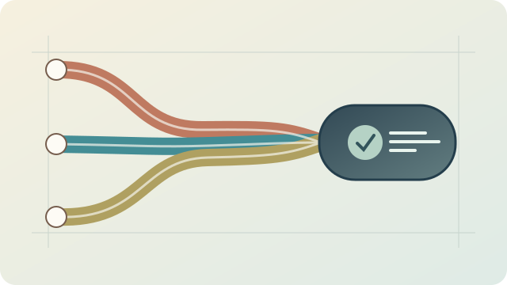
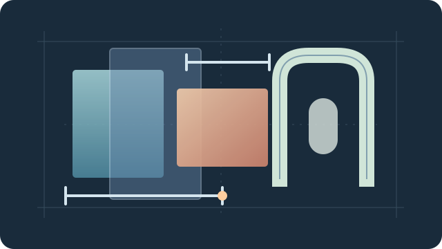

FX-112 · 累计增减瀑布
- 起点45
- 新增+20
- 损耗−12
- 修正+7
- 终值60
读取数值和累计关系
45 + 20 − 12 + 7 = 60，全部为虚构单位。负向柱起点为 53、终点为 65，颜色表示下降。
六种原创独立源码素材，旁附可阅读的演示数据表。所有数字都是虚构示例，视觉比例由作者手动设置，未接数据源或分析引擎。颜色仅辅助表达，不能替代数据。
45 + 20 − 12 + 7 = 60，全部为虚构单位。负向柱起点为 53、终点为 65，颜色表示下降。
红：负向；绿：正向。中立不绘出，中心线是 0，左右半宽各代表 100%。
| 问题 | 负向 | 中立 | 正向 |
|---|---|---|---|
| 易于使用 | 20% | 15% | 65% |
| 任务清晰 | 42% | 20% | 38% |
均为虚构的 0–100 无量纲数值；深色条表示实际、竖线表示目标。背景分档仅作为视觉示例，不对应业务阈值。
| 起始月 | M0 | M1 | M2 | M3 |
|---|---|---|---|---|
| 1 月 | 90 | 63 | 42 | 31 |
| 2 月 | 86 | 59 | 38 | — |
| 3 月 | 88 | 66 | — | — |
表格本身可读。颜色仅重复显示在单元格中的数字；空单元格不是 0。
投入低投入高
纵轴：价值低 → 价值高；中心为示例阈值 50
| 候选 | 投入 X | 价值 Y |
|---|---|---|
| A | 18 | 73 |
| B | 76 | 80 |
| C | 68 | 22 |
| D | 28 | 34 |
固定 10×5 格，区块占比 50/30/12/8%，不是可动态计算的 Treemap。
| 分类 | 比例 |
|---|---|
| 内容 | 50% |
| 技术 | 30% |
| 设计 | 12% |
| 其他 | 8% |


